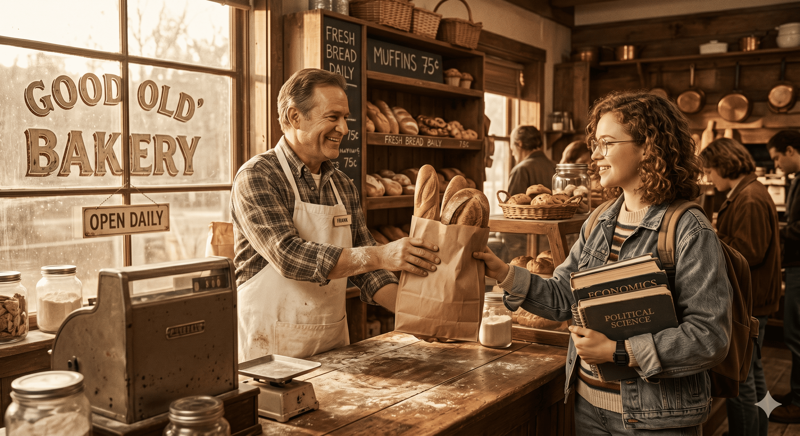
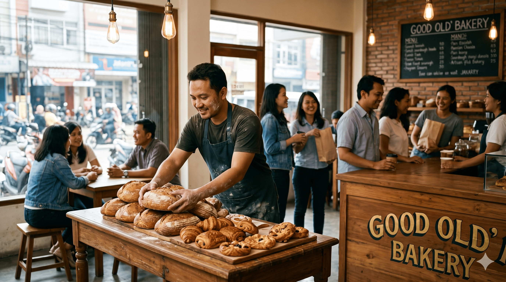
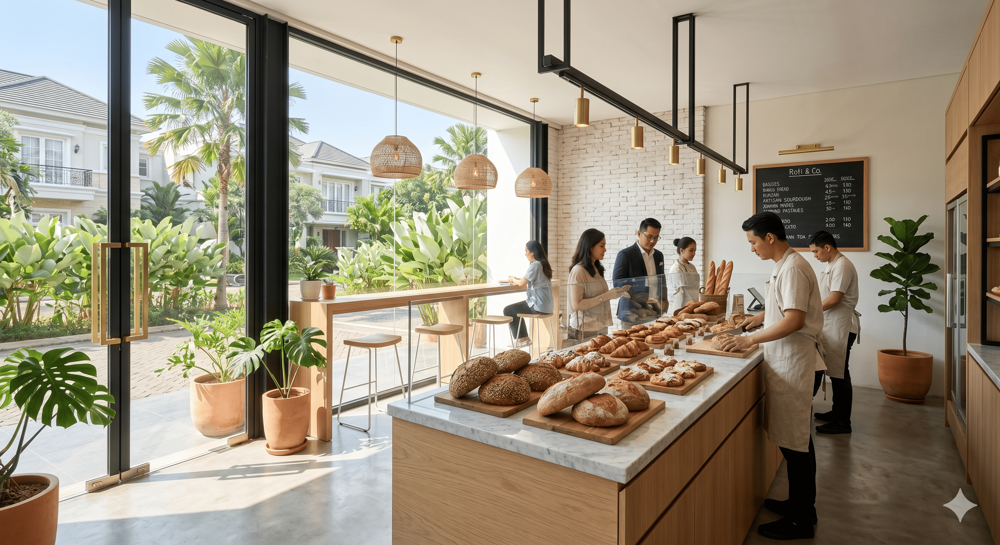
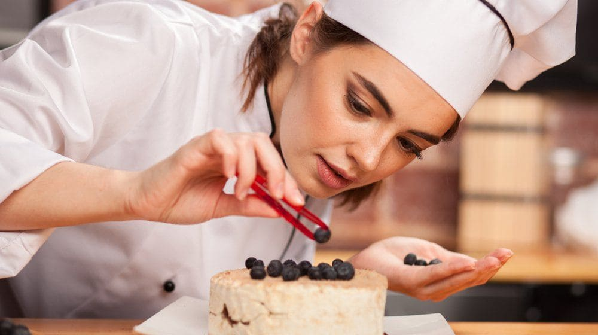
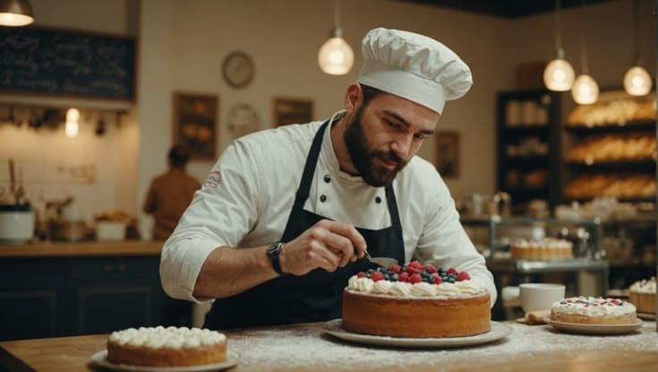

"Believing every bread brings happiness. Experience the timeless craft of traditional baking since 1982."
From a small oven to your neighborhood
The foundation of our heritage. Our very first doors opened in the lively heart of Kemanggisan. What started as a humble oven quickly became a comforting daily staple for the bustling neighborhood and local students, driven by a simple love for traditional baking.

Believing every bread brings happiness

Sharing our family's warmth with the wider city
A new chapter in South Jakarta. We proudly expanded our family to Blok M, bringing our artisanal pastries and fresh sourdough to a wider community of bread lovers while staying perfectly true to our handcrafted roots.
Expanding our horizons. As our story grew, we brought our timeless recipes to BSD. This milestone allowed us to share our beloved heritage with the modern suburbs, blending traditional baking with a fresh, contemporary space.

A modern home for our classic heritage
To be the community's favorite home for authentic, handcrafted baking.
Delivering pure craftsmanship daily using only the finest organic ingredients.
Meet Our Founders

Founder of Good OLd' Bakery
With hands dusted in flour and a heart full of passion, Siti built this bakery from a single humble oven in Kemanggisan. She is the guardian of our heritage, ensuring that every classic recipe remains the comforting soul of our kitchen.

Creative Visionary of Good OLd' Bakery
Blending timeless tradition with modern culinary artistry, Abdul is the mastermind behind our delicate pastries and intricate cakes. He has a meticulous eye for detail, elevating everyday baking into a stunning sensory experience.